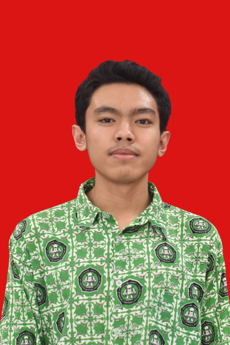

CURICULUM VITAE
Biodata

- Nama: Hafid Hermawan Saputra
- Tempat/Tanggal Lahir: Bandung/12 Januari 2004
- Jenis Kelamin: Laki-laki
- Alamat Rumah: Jln Jatayu No.26a Bandung
- Agama: Islam
- Status Pernikahan: Belum menikah
- Hobi: Ngedesain aja
- Pengalaman Kerja: Desainer Brand, Membuat Alat Ukur Metrologi Legal, Membuat Jasa Photoshoot
- No Telp/HP: 082214082339
- Email: hafidhermawan69@gmail.com
Pengalaman Organisasi
- Bagian Informasi dan Multimedia Pondok Pesantren Al-Basyariyah
- Organisasi Santri Pondok Pesantren Al-Basyariyah,Bagian Penerimaan Tamu
Deskripsi
Saya seorang mahasiswa yang masih menempuh pendidikan kuliah di Universitas Pasundan.
dari program studi Informatika, saya ingin bisa ngoding dan menguasai Soft Skill di bidang IT. Saya dapat mengopresaikan aplikasi
Adobe Photoshop,
Corel Draw Graphic dan saya juga dapat cepat beradaptasi dengan lingkugan sekitar
| Riwayat Pendidikan |
Tahun |
| SDN SOSIAL 1 CIMAHI |
2010-2016 |
| PONDOK PESANTREN AL-BASYARIYAH 2 |
2016-2019 |
| PONDOK PESANTREN AL-BASYARIYAH 3 |
2019-2022 |